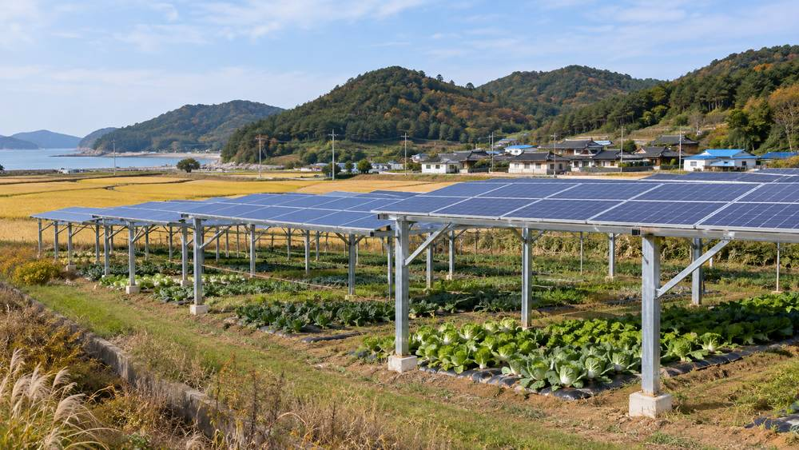

고흥군 "10GW 에너지 대전환, 수익은 군민 에너지연금으로"…세계태양광총회서 공공주도 영농형 1GW·햇빛소득마을 구상 공개

16~19일 대전 총회에 홍보관…주민이 건의한 345kV 송전선로 국가계획 반영 추진, 해상풍력 예비지구 지정도 준비
전남 고흥군이 16일부터 19일까지 대전컨벤션센터에서 열리는 제9회 세계태양광총회(WCPEC-9)에 재생에너지 정책 홍보관을 열고 '10GW 에너지 대전환' 구상을 내놓았다. 군은 전국 지방자치단체 가운데 유일하게 이 행사에 참가했다고 밝혔다. 구상의 뼈대는 농지를 지키면서 발전 수익을 농민에게 돌려주는 1GW 규모 공공주도 영농형 태양광으로, 군은 100MW 시범단지를 먼저 추진한다는 계획이다. 주민 협동조합이 중심이 되는 햇빛소득마을 조성과 정부 제1호 해상풍력 예비지구 지정 추진도 함께 담겼다. 군은 해상풍력과 영농형 태양광에서 나온 수익을 군민에게 돌려주는 '군민 에너지연금'으로 청년과 귀농·귀촌 인구의 정착을 돕겠다고 설명했다. 전기를 내보낼 길로는 주민들이 직접 건의한 345kV 송전선로를 국가 전력망 계획에 넣는 방안을 추진하며, 우주항공·드론·스마트팜에 재생에너지를 더한 '3+1 미래전략'으로 RE100 기업 유치에 나선다는 방침이다.
시민에너지 관점
10GW는 원전 10기에 맞먹는 설비 용량이고, 덴마크는 2009년부터 풍력단지 지분의 20% 이상을 인근 주민에게 먼저 살 기회를 주도록 법으로 정해 대규모 개발과 주민 수용성을 함께 잡았다. 이만한 규모가 농지와 바다를 잠식하고 이익은 외지 자본이 가져갈 것이라는 걱정이 나올 수 있지만, 그 걱정은 '누가 소유하고 수익이 어디로 가는가'를 처음부터 정해 두면 풀린다. 군이 내건 공공주도, 주민 협동조합, 에너지연금이 구호에 그치지 않으려면 주민 지분 비율과 배당 방식, 송전선로가 늦어질 때의 대책이 숫자로 공개돼야 한다. 고흥군과 군의회는 100MW 시범단지부터 주민 출자 몫과 연금 재원 계산을 조례에 못 박아 군민 앞에 내놓아야 한다.
출처: 에너지경제신문 2026-11-16 문남석 원문 보기
高興郡「10GWエネルギー大転換、収益は郡民エネルギー年金に」…世界太陽光発電会議で公共主導の営農型1GW・陽光所得村構想を公開
16～19日の大田での会議に広報館…住民が提案した345kV送電線の国家計画反映を推進、洋上風力予備地区の指定も準備
韓国・全羅南道高興郡が16日から19日まで大田コンベンションセンターで開かれる第9回世界太陽光発電会議（WCPEC-9）に再生可能エネルギー政策の広報館を設け、「10GWエネルギー大転換」構想を打ち出した。郡は、全国の地方自治体の中で唯一この行事に参加したとしている。構想の柱は、農地を守りながら発電収益を農民に還元する1GW規模の公共主導・営農型太陽光で、郡は100MWのモデル団地を先に進める計画だ。住民協同組合が中心となる「陽光所得村」の造成と、政府第1号の洋上風力予備地区指定の推進も盛り込まれた。郡は、洋上風力と営農型太陽光で得た収益を郡民に還元する「郡民エネルギー年金」によって、若者や帰農・帰村人口の定着を後押しすると説明した。電気を送り出す手段としては、住民が自ら提案した345kV送電線を国の電力網計画に反映させる方策を進め、宇宙航空・ドローン・スマートファームに再生可能エネルギーを加えた「3+1未来戦略」でRE100企業の誘致に乗り出す方針だ。
市民エネルギーの視点
10GWは原子力発電所10基に相当する設備容量であり、デンマークは2009年から風力発電所の持ち分の20%以上を近隣住民に優先して購入する機会を与えるよう法律で定め、大規模開発と住民の受容性を両立させた。これほどの規模が農地と海を侵食し、利益は外部資本が持ち去るのではないかという懸念は出うるが、その懸念は「誰が所有し、収益がどこへ行くのか」を最初から決めておけば解ける。郡が掲げた公共主導、住民協同組合、エネルギー年金がスローガンに終わらないためには、住民の持ち分比率と配当方式、送電線が遅れた場合の対策が数字で公開されなければならない。高興郡と郡議会は、100MWのモデル団地から住民出資分と年金財源の計算を条例に明記し、郡民の前に示すべきだ。
出典: 에너지경제신문 2026-11-16 문남석 原文を読む
高兴郡：“10GW能源大转型，收益变成郡民能源年金”…在世界光伏大会公开公共主导农光互补1GW和阳光收入村构想
16日至19日在大田大会设宣传馆…推动把居民提议的345kV输电线路纳入国家规划，并准备申请海上风电预备区
韩国全罗南道高兴郡在16日至19日于大田会展中心举行的第9届世界光伏大会（WCPEC-9）上设立可再生能源政策宣传馆，提出“10GW能源大转型”构想。郡政府表示，它是全国地方自治团体中唯一参加这一活动的。构想的核心是在保住农地的同时把发电收益返还给农民的1GW规模公共主导农光互补项目，郡政府计划先推进100MW示范园区。由居民合作社主导的“阳光收入村”建设，以及推动被指定为政府第1号海上风电预备区，也一并列入。郡政府说明，将通过把海上风电和农光互补的收益返还给郡民的“郡民能源年金”，帮助青年和返乡务农人口定居。在电力外送方面，郡政府推动把居民直接提议的345kV输电线路纳入国家电网规划，并以在航空航天、无人机、智慧农场之外加上可再生能源的“3+1未来战略”吸引RE100企业。
市民能源视角
10GW相当于10座核电机组的装机容量；丹麦自2009年起以法律规定，风电场至少20%的股份须优先提供给附近居民认购，从而兼顾了大规模开发与居民接受度。如此规模可能侵占农地和海域、利益被外来资本拿走的担忧不难想见，但只要一开始就定好“谁来拥有、收益去向何处”，这种担忧就能化解。郡政府提出的公共主导、居民合作社和能源年金要不流于口号，就必须用数字公开居民持股比例、分红方式以及输电线路延迟时的对策。高兴郡和郡议会应从100MW示范园区开始，把居民出资份额和年金财源的计算写入条例，摆在郡民面前。
来源: 에너지경제신문 2026-11-16 문남석 查看原文
Goheung County Pledges 10 GW Energy Shift with Revenue Paid as a Residents' Energy Pension, Unveils 1 GW Public-Led Agrivoltaics Plan at World Solar Conference
Booth at the 16–19 November conference in Daejeon — county seeks to put a resident-proposed 345 kV line into the national grid plan and prepares an offshore wind zone bid
Goheung County in South Jeolla Province, South Korea, has opened a renewable energy policy booth at the 9th World Conference on Photovoltaic Energy Conversion (WCPEC-9), held at the Daejeon Convention Center from the 16th to the 19th, and presented its "10 GW energy transition" vision. The county says it is the only local government in the country taking part in the event. The core of the plan is 1 GW of public-led agrivoltaics that keeps farmland in use while returning generation revenue to farmers, with a 100 MW pilot complex to be pursued first. It also includes sunlight income villages led by residents' cooperatives and a bid to be designated the government's first preliminary offshore wind zone. The county said a "residents' energy pension", funded by revenue from offshore wind and agrivoltaics, would help young people and newcomers to farming settle there. To export the power, it is seeking to have a 345 kV transmission line proposed by residents themselves included in the national grid plan, and it intends to attract RE100 companies through a "3+1 future strategy" that adds renewables to aerospace, drones and smart farming.
Citizen Energy View
Ten gigawatts is capacity on the scale of ten nuclear reactors, and Denmark has since 2009 required by law that at least 20% of the shares in a wind farm be offered first to nearby residents, reconciling large-scale development with local acceptance. A plan of this size will raise fears that farmland and sea will be taken over while outside capital walks away with the profit, but those fears are answered by settling from the start who owns the assets and where the revenue goes. For public leadership, residents' cooperatives and an energy pension to be more than slogans, the county must publish in figures the residents' ownership share, the dividend method and what happens if the transmission line is delayed. Goheung County and its council should begin with the 100 MW pilot, writing the residents' investment share and the pension funding formula into an ordinance and putting them before the public.
Source: 에너지경제신문 2026-11-16 문남석 Read the original